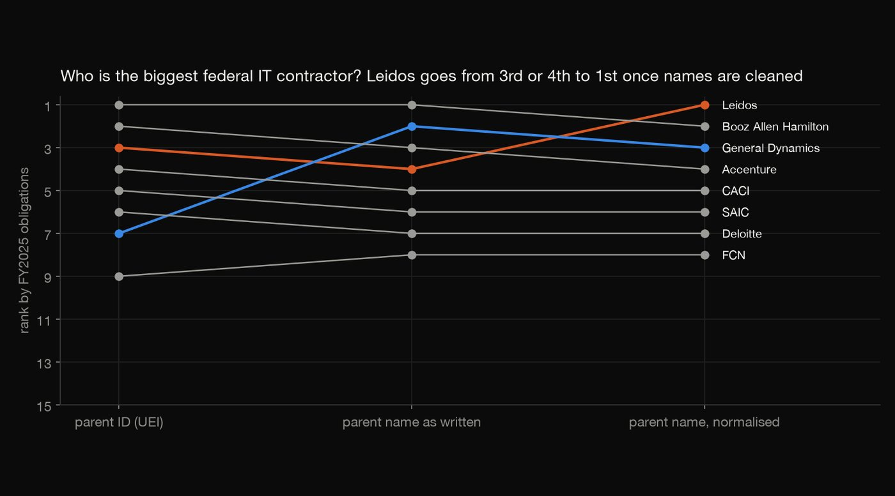
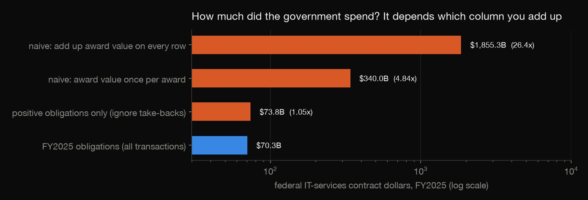
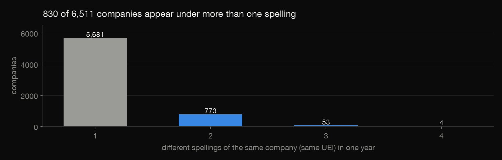
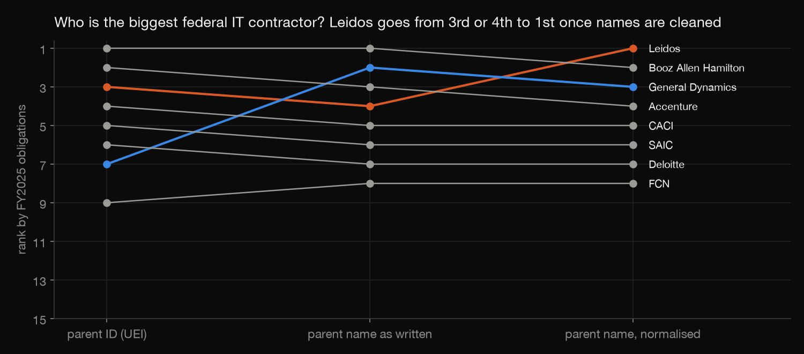

Data wrangling · SQL · 2026-10
Federal IT Contracts, Cleaned
A year of federal IT-services contract transactions (124,996 rows) cleaned step by step: the easy total is 26 times too high, money taken back is easy to miss, and normalising company names changes who is the biggest contractor.

Parent names are merged by rules (punctuation, legal suffixes and "holdings" removed); every merge is published for review, because rules can occasionally join two different firms.
01 — The problem
USAspending publishes every federal contract action, and reporters, analysts and competitors use it to answer two simple questions. How much did the government spend on IT services? Which companies won the most? Both have easy, wrong answers in the raw data: totals that count the same award many times, money taken back that disappears, and one company filed under several names.
02 — What I built
A cleaning pipeline over FY2025 IT-services contract transactions (NAICS 5415, 124,996 rows, 297 columns):
- Quality checks: unique keys, dates in the fiscal year, numeric obligations, a UEI on every recipient.
- The right total, compared with three tempting wrong ones.
- Name variants per company, and a parent roll-up three ways: by parent ID, by parent name as written, and by normalised parent name.
- An independent check in plain Python.
03 — How it was built
- 01
Get only the rows needed
The full FY2025 contracts archive is 1.9 GB and downloaded at about 430 KB/s. USAspending's API can instead build a custom file, here contract awards with NAICS 5415xx and FY2025 action dates. It took 17 minutes to build and is 25 MB zipped.
- 02
Add up the right column
Each row is one transaction: the base award or a later modification. The tempting column,
current_total_value_of_award, repeats the whole award, often a multi-year ceiling, on every row. Summed, it says $1,855 billion. Counting each award once still gives $340 billion. The real FY2025 spend is the sum offederal_action_obligation: $70.3 billion.
SELECT 'naive: add up award value on every row' AS method, sum(award_value_as_listed) AS dollars FROM tx - 03
Keep the money taken back
13,389 modifications de-obligate money, −$3.56 billion in all. They are part of the year's spending, and dropping negative rows as if they were errors overstates the total by 5%.
UNION ALL SELECT 'modifications that take money back (negative)', count(*), sum(obligation) FROM tx WHERE obligation < 0 - 04
Resolve company names
830 of 6,511 companies appear under more than one spelling in the year. Parent companies are messier still. General Dynamics carries two parent IDs, and Leidos appears as "LEIDOS HOLDINGS, INC.", "LEIDOS, INC." and "LEIDOS INC". Removing punctuation, legal suffixes and "holdings" merges 94 parent names into 46 companies, and every merge is listed for review.

SUFFIXES = "INCORPORATED|INC|LLC|L L C|CORPORATION|CORP|CO|COMPANY|LTD|LP|LLP|PLC|HOLDINGS|HOLDING|THE" - 05
Check it in plain Python
check.pyreads the raw CSV with Python'scsvmodule and re-implements the name rules with Python's own regex engine. It matches DuckDB on the total, the take-backs, both naive totals, all 6,147 normalised parents and the top-15 ranking.assert mine == list(top["id"]), (mine, list(top["id"]))
04 — Results
Who won the most depends on the cleaning:
| Grouped by | No. 1 | Leidos |
|---|---|---|
| Parent ID | Booz Allen | 3rd |
| Parent name | Booz Allen | 4th |
| Normalised | Leidos | 1st |
After cleaning, Leidos leads with $3.73B, ahead of Booz Allen Hamilton ($3.35B) and General Dynamics ($3.28B). General Dynamics is split across two parent IDs and ranks only 7th by ID.

- Competition: 32.2% of new-award dollars went to contracts that received a single offer, 39.2% to contracts with two or more, and for 28.7% the number of offers wasn't recorded.
05 — What I'd do next
- Add fuzzy matching for names that rules miss ("SIERRA 7" and "SIERRA7").
- Bring in subawards, to see where prime contractors' money goes next.
- Compare across fiscal years, now that the cleaning is a repeatable pipeline.